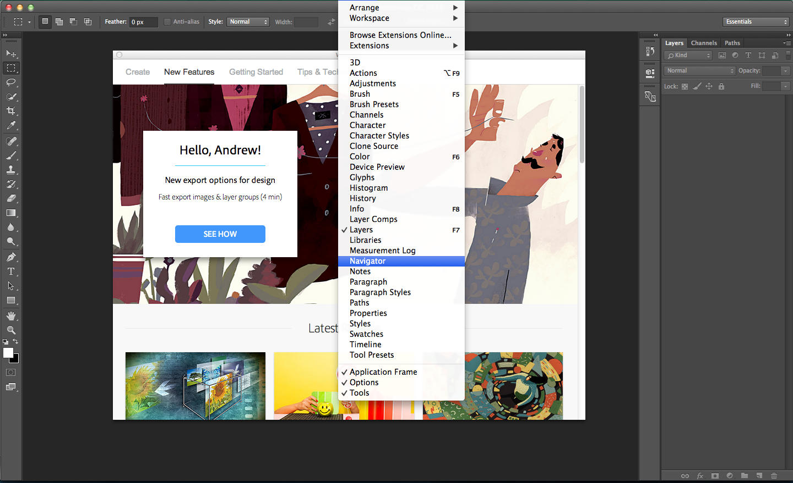
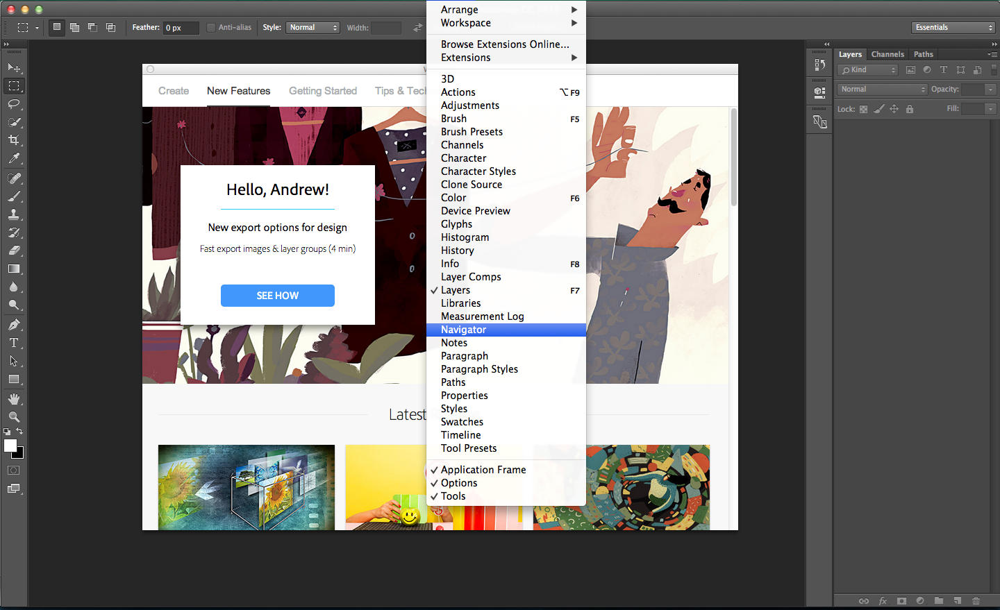

Close  Showing panels: Click
Showing panels: Click Window and select a panel to show (Layers, etc.)   The navigator panel has appeared
The navigator panel has appearedSalem the cat is loney at dinner. Her mom is concerned Salem isn't making any friends, and is asking Salem to send her a picture of her and her friends. Salem wants it to appear like all of her friends to join her.
First, lets open Photoshop and customize the workspace.
Customize the workspace by hiding and showing panels.
Hiding panels : Right click on a panel and choose Close Showing panels: Click Window and select a panel to show (Layers, etc.)  The navigator panel has appeared
Saving a workspace: Click Window > Workspace > New Workspace. Name and save your workspace. 
We're ready to open an image.
Open an image: Click File > Open or Ctrl + o. Open salem.jpg. 
Show the navigation panel: Window > navigation  __Hand tool__: PressHor click the hand icon. Drag to navigate with the hand tool. __Automatically fit an image to the window__:cmd + 0orView > fit on screen`